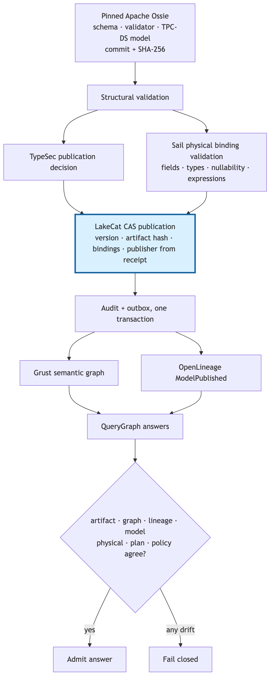

QueryGraph describes itself as “the governed semantic layer for
enterprise agentic AI” [6]. Its architecture separates two semantic
layers that BI tooling often conflates. Layer A is
physical/catalog semantics: which table version is current,
which fields exist with which Iceberg types, which snapshot a plan read.
Layer B is business/agent semantics: what a measure,
relationship, or concept means, expressed in a portable model such as
Apache Ossie [44]. The catalog owns Layer A; QueryGraph authors Layer B;
a bootstrap bundle—a projection of live catalog tables into
Semantic Croissant [56], CDIF [57], OSI/Ossie, ODRL [30], OpenLineage
[41], and a Grust-ready graph envelope, with a manifest that hashes
every artifact—bridges them. The bundle’s wire format lives in one
shared crate, qglake-bundle, used by producer and consumer,
so “the bundle cannot mean two slightly different things on the two
sides of the boundary” [6]. QueryGraph verifies the manifest with
LakeCat’s own verifier before it builds a Cypher import plan: it
“accepts catalog state as proof.”
What makes the layer responsible rather than merely governed
is that access is decided by a dual gate—RBAC and ODRL must
both allow—by agents whose identity is a TypeDID envelope signed with a
did:key, whose lineage events carry Ed25519 attestations,
and whose memory is capability-gated with clearance-typed recall. The
model, in QueryGraph’s phrase, “should not see raw rows until a semantic
layer has explained the shape of those rows,” and it should receive “the
result of focused computation, not the entire raw warehouse” [6].
Retrieval is narrowed by policy before it is narrowed by relevance.
The engine contract extends to semantics: LakeCat stores no Ossie document semantics. It stores an immutable publication record:
pub struct ModelPublication {
pub model_id: String,
pub warehouse: WarehouseName,
pub version: u64,
pub artifact_uri: String,
pub artifact_hash: String,
pub physical_bindings: Value,
pub policy_binding_ids: Vec<String>,
pub publisher: Principal,
pub published_at: DateTime<Utc>,
}Publication is a CAS transition on the model’s version: inside one
write transaction the store reads the current maximum version, requires
that it equal the caller’s expected version and that the new version be
exactly its successor, requires every referenced policy binding to exist
(reporting a missing one only by content hash), inserts the publication,
appends a model.published audit event, and stages an outbox
event—all or nothing. The management endpoint requires a
policy-manage capability and takes the publisher from
the receipt, never from the request body. The outbox drain then
projects the publication into a stable QueryGraph-model graph anchor for
Grust and a hash-bound OpenLineage ModelPublished
event.
The admission order above the catalog is fail-closed by construction: structural validation against the pinned upstream schema; a TypeSec publication decision; Sail’s physical validation of dataset fields, Iceberg types, nullability, and parsed expression inputs against real tables; the catalog CAS; transactional audit and outbox; replay into Grust and OpenLineage; and only then acceptance of semantic answers. Malformed, unauthorized, missing-physical, schema- or model-drifted, and unknown-version publications fail before catalog promotion or downstream projection.
A semantic answer in this pipeline is bound to seven independently
hashed bases—the set is literal in code:
{artifact, graph, lineage, model, physical, plan, policy}—each
a canonical SHA-256, combined into an answer hash and a proof hash. The
evaluation then perturbs six of them independently (physical, model,
policy, graph, lineage, artifact) and requires that every perturbation
invalidate the saved proof; a perturbation that is accepted is an
assertion failure. Section 8.6 reports the run.

Figure 3. A semantic model becomes usable only after it is validated structurally and physically, authorized, CAS-published through the catalog, replayed, and bound to seven proof bases.